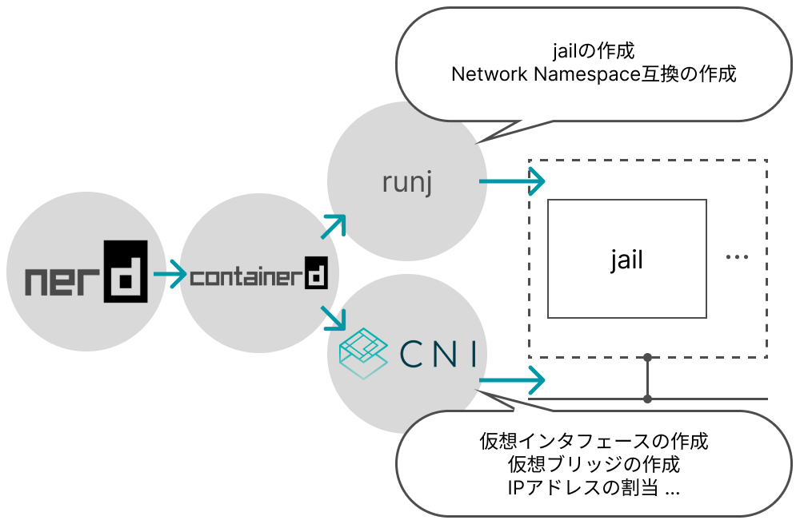

キーワード： Network Namespace / vnet / コンテナランタイム
異種OS機能連携のためのセキュアコンテナネットワーキング機構の実現を達成するために、Network Namespace互換機能の実現する必要がある。FreeBSDでのネットワークスタック分離機能であるvnetと、jailの入れ子構造を利用することでNetwork Namespace互換機能を実現する。このNetwork Namespace機能をOCI準拠jailランタイムであるrunjに実装することで、FreeBSDで単一ノード上コンテナ間通信が実現した。
背景
-
異種OS機能連携によるセキュアコンテナを実現するにあたって、Netwrok Namespaceが必要
- 複数コンテナが1つのネットワークスタックをを共有するために必要
- KubernetesのPodやサイドカーコンテナとして利用
- Linuxコンテナネットワーキングの標準規格であるCNIへの準拠が必要
課題
-
FreeBSDのネットワークスタック分離機能であるvnetは、複数のjailが同居することが不可能
- vnetとjailは1-1対応になっている
-
CNIコアプラグインは一部FreeBSDでも利用可能だが、Linuxと同等の操作を行えるようにする必要がある
- 分離されたネットワークスタックの指定方法に差異
実装

-
FreeBSDでjailを作成できる低レベルコンテナランタイムであるrunjに、Network Namespace互換機能を実装
- vnet jailにjailを入れ子構造で作成することで、Network Namespace互換とし、ネットワークスタックを共有可能
- Network Namespace互換を管理するファイル等も用意することで、Linuxと同等の管理インタフェースを用意
-
CNIコアプラグインを、実装したNetwork Namespace互換機能を指定できるように改良
- bridgeプラグインをNetwork Namespace互換に対応させた
- nerdctl + containerdを用いた動作確認
評価
-
仮想ブリッジを用いた従来のjail間通信とNetwork Namespace互換を用いたjail間通信を比較
- Network Namespace互換を用いたjail間通信の方が通信スループットが向上
→ネットワークスタックを共有したことによる通信特性の変化
- Network Namespace互換を用いたjail間通信の方が通信スループットが向上
-
jailの入れ子によるアプリケーションへの影響をUnixBenchによって評価
- 性能に大きな影響は見られなかった
→入れ子構造を用いたNetwork Namespace互換は、jail内アプリケーションに与える影響が少なく済んでいる
- 性能に大きな影響は見られなかった
頑張った点
- vnetと入れ子構造に着目したNetwork Namespace互換の構造を提案することで、大きく改変を加えることなくNetwork Namespace互換を実現できた
- インフラに興味を持ってから最初のWorkであり、わからないことを調べ、それを実際に動かして確認するということの大切さを学ぶことができた
- 学会発表などを通して、他者へわかりやすく伝える力を培うことができた
URL
runj (GitHub)：https://github.com/SoumaSakaguchi/souma-runj-pablic
cni-plugin (GitHub)：https://github.com/SoumaSakaguchi/souma-cni-plugin-pablic